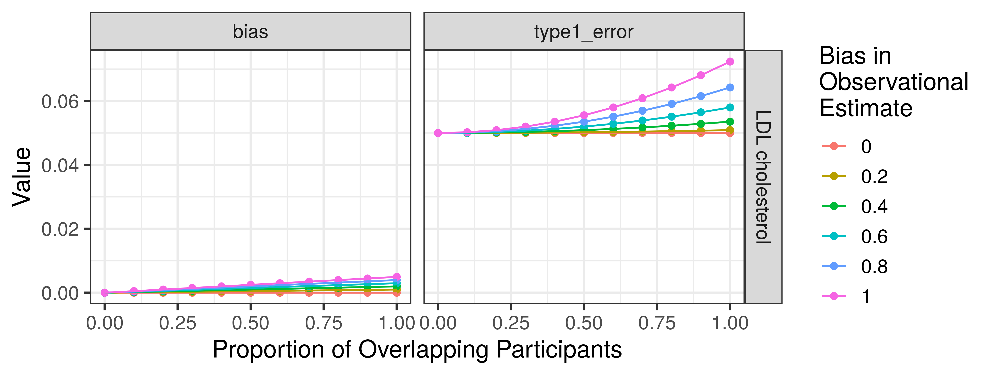

The goal of mrSampleOverlap is to estimate bias due to participant overlap in Mendelian Randomization studies. This package implements code described in Burgess et. al. 2016 (DOI: 10.1002/gepi.21998)
Installation
You can install the development version of mrSampleOverlap from GitHub with:
# install.packages("devtools")
devtools::install_github("mglev1n/mrSampleOverlap")Usage
Here, we will use the estimate_overlap_bias function in a more complex example, to estimate the bias across a range of possible values of sample overlap and observational bias.
First, we will use the TwoSampleMR package to query the MRC-IEU OpenGWAS Project for summary GWAS data to use for our exposure and outcome. We will consider LDL cholesterol (Willer et. al. 2013) as our exposure, and Coronary Artery Disease (Van der Harst et. al. 2017; 122,733 cases and 424,528 controls) as our outcome:
# devtools::install_github("MRCIEU/TwoSampleMR")
# install.packages("tidyverse")
library(tidyverse)
library(TwoSampleMR)
library(mrSampleOverlap)
# extract genetic instruments for BMI
ldl_exposure <- extract_instruments(outcomes = "ieu-a-300")
# extract corresponding outcome data for coronary artery disease
cad_outcome <- extract_outcome_data(snps = ldl_exposure$SNP, outcomes = "ebi-a-GCST005195")
# harmonize effect alleles, and keep only alleles present in both exposure and outcome data
dat_harmonized <- harmonise_data(ldl_exposure, cad_outcome) %>%
filter(mr_keep == TRUE)Next, we use TwoSampleMR::add_rsq() to add the R2 value necessary to calculate bias, and summarize:
dat_summarized <- dat_harmonized %>%
add_rsq() %>%
group_by(exposure) %>%
summarize(rsq_exposure = sum(rsq.exposure), n_variants = n(), samplesize_exposure = max(samplesize.exposure), samplesize_outcome = max(samplesize.outcome))We can use the tidyr::crossing() function to generate a grid containing a range of values for sample overlap and observational bias
Finally, we can estimate bias in our MR estimates using the estimate_overlap_bias() function:
bias_res <- dat_summarized %>%
crossing(grid) %>%
mutate(res = estimate_overlap_bias(samplesize_exposure = samplesize_exposure, samplesize_outcome = samplesize_outcome, n_variants = n_variants, rsq_exposure = rsq_exposure, overlap_prop = overlap_prop, ols_bias = ols_bias, case_prop = 122733/547261)) %>%
unnest(res)We can optionally plot our results. We see that as the proportion of sample overlap increases, so does type 1 error, while bias remains relatively small. Type 1 error and bias are also magnified as the bias in the observational estimate increases:
bias_res %>%
split_exposure() %>%
pivot_longer(cols = c(bias, type1_error)) %>%
ggplot(aes(overlap_prop, value, group = ols_bias, color = as.character(ols_bias))) +
geom_point() +
geom_line() +
facet_grid(rows = vars(exposure),
cols = vars(name),
scales = "free_y") +
labs(x = "Proportion of Overlapping Participants",
y = "Value") +
scale_color_discrete(name = "Bias in \nObservational \nEstimate") +
theme_bw(base_size = 14) 